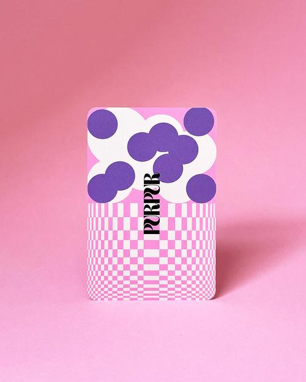
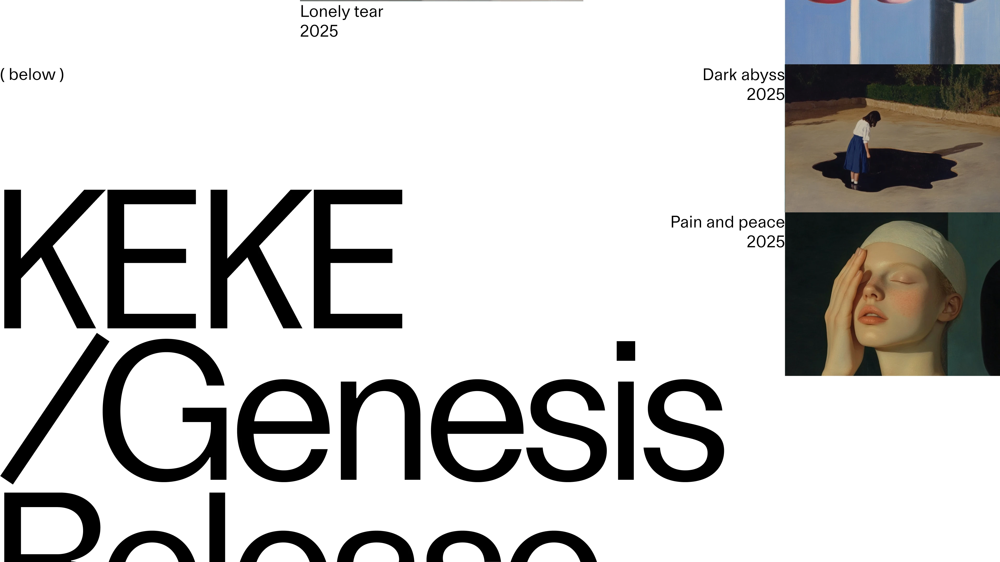
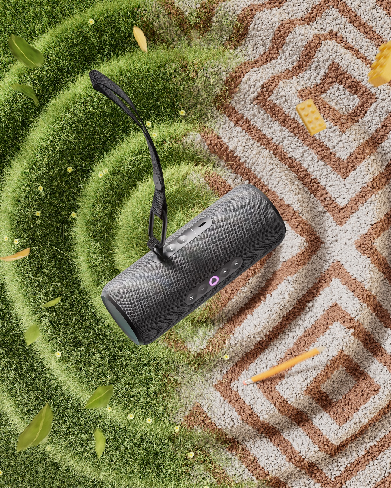
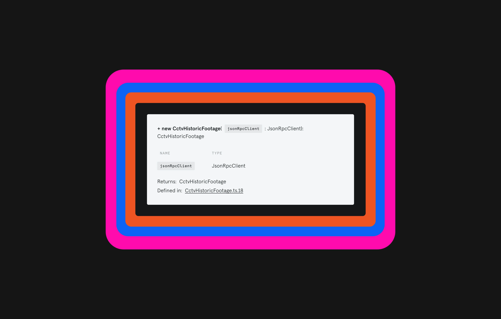
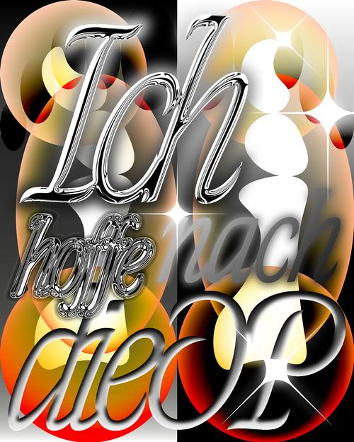

Маша пришла в коммдиз почти случайно и отошла от «сделаю всё сама» к коллаборациям. В TON Foundation делает ребрендинг в команде и говорит о границах с AI-картинками.
Что для тебя дизайн-культура: какие принципы, ценности, подход к работе?
Вопрос реально сложный. У меня очень быстро всё меняется: и моё отношение к чему-то, и к дизайну тем более, потому что я этим занимаюсь каждый день. Очень много вещей, которые меня привлекают или, наоборот, не привлекают, и это постоянно меняется. Иногда те, которые нравились, становятся теми, которые не нравятся, а те, которые не нравились, наоборот.
Сейчас, наверное, для меня это больше про коллаборации. Это тоже сильно поменялось: до этого у меня была ценность в дизайне в том, что я могу сделать всё сама от нуля и до конца. Это очень сильно поменялось после окончания университета. И теперь это для меня, наоборот, только про какую-то совместную работу. Я научилась, мне кажется, очень классно работать с другими людьми. Сейчас в этом основная ценность дизайна: что можно всё время с кем-то что-то делать вместе, и это даёт больший результат, чем когда ты делаешь это один.
Очень соглашусь. В какой-то момент я была сфокусирована на том, чтобы рисовать самой и придумывать что-то самой. Но кажется, что важно выходить за это поле самости. Классные идеи появляются в процессе работы с другими.
Расскажи немного про путь: почему ты вообще пошла в дизайн?
В дизайн я попала по очень счастливой случайности. У меня был раздрай после школы. Друг сказал, что Вышка КомДиз в первый раз набирает людей в Санкт-Петербурге: «Маша, это для тебя, тебе точно подойдёт». Я тогда вообще ничего не знала про Вышку и не знала, что там есть коммуникационный дизайн и что в Питере они открылись впервые. И я туда поступила.
Дальше началась очень интересная мне жизнь. Я поступила поздно, мне уже было двадцать, может, двадцать один. У меня уже было совсем другое отношение к обучению, чем если бы я поступила в семнадцать-восемнадцать. Всё очень быстро как-то закрутилось. Уже на втором курсе я работала в Verle. Это было на самом деле довольно долго: я работала там два с половиной года, и мы сделали там очень много супер крутых проектов.


Главное, чему я там научилась, — это работать. Из-за того, что команда была маленькая, мне просто говорили: «Короче, ты делаешь вот это всё». Сейчас это для меня немного странно звучит, но тогда я как будто бы этого хотела. У меня было очень много свободы и ответственности.
Был ещё подход, что условно, если ты не умеешь что-то делать, окей, ну садись и сделай всё равно. Сейчас я не могу такое представить в каких-то крупных современных компаниях, в которых работаю в том числе. А там был именно такой подход.
Так мы сделали проект для Expo. Это очень крупная кофейная выставка в Москве, такая хор[е]ка-индустрия: посуда для ресторанов, обжарители из России. Задача — сделать стенд. Я-то человек, который не работает ни в каких архитектурных программах. Мы просто взяли, нарисовали, всё придумали. И этот стенд получился действительно странным и уникальным, потому что он очень сильно отличался от всего, что было на выставке. Мы выглядели как ребята из другого мира: оградили себя от всех этих кричащих стендов просто шестиметровыми белыми стенами. Были совсем не такими, как все. Это очень классно сработало и привлекло нужную нам аудиторию.
А что ещё на старте тебя вдохновило, может быть, через призму ключевых проектов, которые меняли взгляд на профессию?
Из проектов это, наверное, проект мебели. Тот же самый момент: ты не умеешь это делать, но всё равно делаешь. Это был мой дипломный проект в Вышке. Он родился, когда я поняла, что мне будет скучно делать книжку, или айдентику, или ещё что-то целый год, в момент, когда я просто студент, и от меня этого не требуют, и я реально могу выбрать то, что мне интересно. И решила: ну, целый год, я точно это сделаю. Даже с нуля.
«До этого у меня была ценность в дизайне: что я могу сделать всё сама от нуля и до конца. Сейчас, наоборот, только про совместную работу».
— Маша Черн
«Был подход: не умеешь что-то делать, окей, садись и сделай всё равно».
— Маша Черн

(о ворк-лайф балансе) Это важно не только для меня, но и для моего работодателя на самом деле: чтобы я была в хорошем рабочем состоянии всё время, чтобы фокус не рассеивался. Когда я уставшая, я не могу концентрироваться на каких-то вещах. Это открытие, но это тоже было не всегда так. Это очень долгий путь, чтобы к этому прийти. В Verle вообще так не было.
Последние года три я стараюсь именно так жить, и это даёт очень классный эффект. Мне не надоедает моя работа, я могу долго работать. И я более стрессоустойчива к каким-то ситуациям. И самое главное — я катаюсь на велосипеде. Нужно, чтобы было такое хобби, которое даёт сто процентов всего: счастья, эндорфинов, радости, спокойствия. Чтобы это было не диджитал-хобби. Желательно даже не очень крафтовое, где не нужно много думать. Хобби, которое даёт тебе всё то, в чём у тебя есть незаполненности.
Звучит как очень построенные личные границы. На это нужна определённая смелость. Для всей креативной индустрии характерно довольно свободное отношение к своему времени: ты работаешь всё время, мозг в фоновом режиме переваривает. Для этого важен или качественный отдых, или качественное переключение. Круто, что у тебя получилось это отстроить, я ещё в процессе.
Это сложно. Но если просто пойти к людям и рассказать, как у тебя это работает, то получаешь довольно много понимания и поддержки, там, где раньше мне было стыдно и я стеснялась.
«Нужно, чтобы было хобби, которое даёт сто процентов всего: счастья, эндорфинов, радости, спокойствия. И чтобы это было не диджитал-хобби».
— Маша Черн
Сейчас в мире все только разгоняются с AI. Есть дискуссии, что технологии нам помогают; есть дискуссии, что они нас всех заменят. Как ты используешь AI? Есть ли у тебя крафт в процессе, что ты рисуешь руками? Если нужно сделать 3D-шку, ты не сидишь в Blender, а сразу идёшь генерить?
Я очень люблю AI. Я поняла, что вообще не пользуюсь Google больше. У меня там теперь только почта рабочая. Это какой-то супер изменник, который пришёл сам по себе. У меня даже не было цели в том, чтобы это произошло.
Это помогает мне в первую очередь так: я вообще не трачу время на то, чтобы писать текст самостоятельно. Я закидываю список всех своих идей и говорю: «Слушай, напиши, как бы вот я написала». Мы же общаемся, ты знаешь, как я разговариваю. Это помогает очень быстро делать вещи, которые до этого занимали дни и недели. Сейчас просто появилась мысль, ты её быстро закинул, и она уже оформлена в идеально красивый текст, ещё и написанный с твоей интонацией, с твоими словечками.
При этом я не считаю, что могу доверять AI дизайн-штуки. Для меня AI — скорее очень классное дополнение. В Тоне в нашем ребрендинге будет много AI-картинок, но это будут картинки, которые… Я очень не люблю эту вещь в Твиттере, что все постят картинки из AI и они максимально некачественные. Мне это не близко. Я не считаю, что это делает мир лучше. Это, наоборот, делает кучу низкокачественного контента, который и так был. Просто его стало ещё больше.
У меня нет страха, что эта штука меня заменит. Но я понимаю, что всё развивается настолько быстро, что иногда кажется: если ты сделаешь один год паузу в карьере, вернёшься в мир, где уже всё функционирует по-другому, и ты уже немного не впишешься. Но мне кажется, это всё равно немного токсичная мысль. Я стараюсь так не думать. Я слышу такие мнения, но не знаю, мне кажется, всё равно какой-то человеческий труд будет цениться. А там, где он перестанет цениться, — это просто не те места, к которым мне хотелось бы иметь отношение.
В ребрендинге Тона мы придумали, какой это мир, какая-то вселенная Тона, где всё выглядит каким-то образом. И это всё равно будут промпты, которые мы напишем, уточним и, может быть, потом ещё сверху отредактируем своими руками. Я не думаю, что AI пока может выдавать такое же качество работы, как человек. Я даже надеюсь, что AI заменит меня на всяких рутинных задачках: что ему можно будет дать шаблон, и он будет по нему всё делать. Но креативная смысловая вещь, концепции и идеи по улучшению всего, они всё равно будут за людьми, а не за искусственным интеллектом.
Это очень этичный и ответственный подход. Странно бояться технологий просто потому, что они нас ускоряют. Важно ответственно относиться к использованию и не наводить слишком много шума и пустоты вокруг своей деятельности.
«Я очень не люблю вот эту вещь в Твиттере, что все постят картинки из AI максимально некачественные. Это, наоборот, делает кучу низкокачественного контента».
— Маша Черн
«Креативная смысловая вещь, концепции и идеи по улучшению всего, всё равно будут за людьми, а не за искусственным интеллектом».
— Маша Черн


Дополнительно
- —
О практике
Маша Черн — сеньер дизайнер TON Foundation.